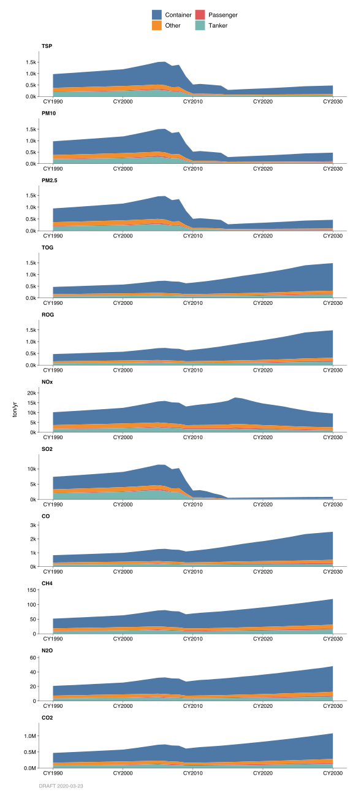
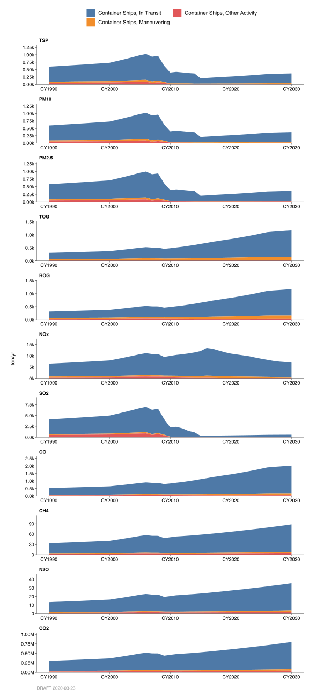
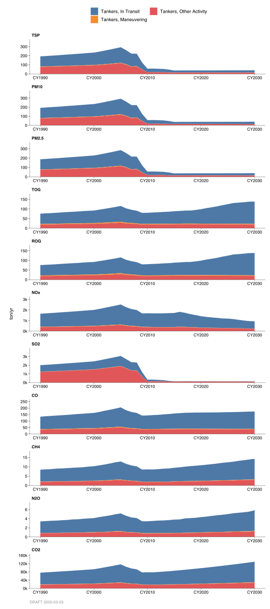
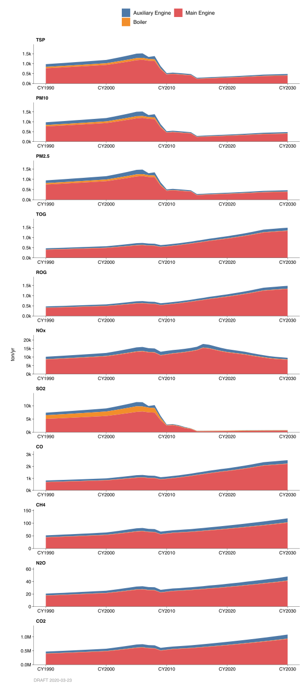

9.7 Ships
9.7.1 Emissions
Introduction
Emissions reported in these categories are from combustion of fuel from engines of commercial ocean-going vessels (OGVs). The emission estimates for OGVs are developed by the California Air Resources Board (CARB) and are based on numerous sources that include data from CARB OGV surveys, vessel population data from governmental agencies such as State Land Commissions, and engine characteristic data from various OGV studies and manufacturer reports. The inventory accounts for commercial OGVs greater than or equal to 400 feet in length or 10,000 gross tons or propelled by a marine compression ignition engine with a displacement equal to or greater than 30 liters per cylinder. The emission inventory includes all ocean-going vessel emissions occurring within 3, 24, and 100 nautical miles from the coastline of the San Francisco Bay Area region.
Methodology
The methodology used to estimate OGV emissions is based on CARB’s 2005 draft report titled, “Emissions Estimation Methodology for Ocean-Going Vessels”. Although the report is in draft form, the emission data is derived based on methodology and findings given in this report.
Emissions from OGVs vary based on ship type and operating mode. There are eight ship types and three operating modes accounted for in the inventory. The ship types include auto vessels, bulk carriers, container ships, passenger ships, reefers, RORO ships, tankers, and general vessels (others). The operating modes include the hotelling/berthing mode (including anchorage), maneuvering mode, and in-transit mode.
Under each operating mode, the emissions are broken down by fuel. OGVs emissions vary depending on the type of fuel used to power the engines. Two fuel types, residual fuel and distillate fuel, are generally used in the operation of OGVs. These fuels are combusted in three areas: the ship’s main engine(s), the auxiliary engine(s), and the ship’s boiler(s). The emissions associated with the combustion of fuels from these OGV engines in relation to a particular ship type and operating mode are given by categories and accounted for in the inventory.
In addition to criteria pollutants, greenhouse gas emissions are included in the emission inventory. Greenhouse gas emissions, including CO2, CH4, and N2O, are taken from CARB data base. Greenhouse gas emission factors take into account fuel-specific carbon content and the percent of carbon that oxidizes to convert to greenhouse gas emissions.
Monthly Variation
Monthly distribution was estimated based on the ships traffic for each month as reported by the San Francisco Marine Exchange.
County Distribution
For maneuvering and in-transit categories, county fractions are not based on actual port location, but rather where the emissions activity occurred during the particular mode of operation of the vessel. For example, during the maneuvering or in-transit mode, vessels may pass through several counties on their way to and from port. Berthing operations occur at port, and therefore, county fractions here are based on the port’s relevant activity.
| category | ALA | CC | MAR | NAP | SF | SM | SNC | SOL | SON |
|---|---|---|---|---|---|---|---|---|---|
| #2041 Auto Carrier, Anchorage (Aux. Engine) | – | 100.0% | – | – | – | – | – | – | – |
| #2042 Auto Carrier, Anchorage (Boiler) | – | 100.0% | – | – | – | – | – | – | – |
| #2043 Bulk Cargo, Anchorage (Aux. Engine) | 16.6% | 36.4% | – | – | 13.0% | 34.0% | – | – | – |
| #2044 Bulk Cargo, Anchorage (Boiler) | 10.0% | 45.0% | – | – | 10.0% | 35.0% | – | – | – |
| #2045 Container, Anchorage (Aux. Engine) | 93.5% | – | – | – | 6.5% | – | – | – | – |
| #2046 Container, Anchorage (Boiler) | 81.5% | – | – | – | 18.5% | – | – | – | – |
| #2047 General Cargo, Anchorage (Aux. Engine) | 80.0% | 13.3% | – | – | 6.7% | – | – | – | – |
| #2048 General Cargo, Anchorage (Boiler) | 100.0% | – | – | – | – | – | – | – | – |
| #2049 Passenger, Anchorage (Aux. Engine) | – | – | – | – | 100.0% | – | – | – | – |
| #2050 Passenger, Anchorage (Boiler) | – | – | – | – | 100.0% | – | – | – | – |
| #2051 Ro/Ro, Anchorage (Aux. Engine) | 100.0% | – | – | – | – | – | – | – | – |
| #2052 Ro/Ro, Anchorage (Boiler) | 100.0% | – | – | – | – | – | – | – | – |
| #2053 Tanker, Anchorage (Aux. Engine) | – | 90.5% | – | – | 9.5% | – | – | – | – |
| #2054 Tanker, Anchorage (Boiler) | – | 86.4% | – | – | 13.6% | – | – | – | – |
| #2055 Misc. Vessel, Anchorage (Aux. Engine) | – | – | – | – | 80.0% | 20.0% | – | – | – |
| #2056 Misc. Vessel, Anchorage (Boiler) | 100.0% | – | – | – | – | – | – | – | – |
| #2057 Auto Carrier, Anchorage (Aux. Engine) | – | 100.0% | – | – | – | – | – | – | – |
| #2058 Auto Carrier, Anchorage (Boiler) | – | 100.0% | – | – | – | – | – | – | – |
| #2059 Bulk Cargo, Anchorage (Aux. Engine) | 1.5% | 20.1% | – | – | 54.8% | 23.6% | – | – | – |
| #2060 Bulk Cargo, Anchorage (Boiler) | – | 40.6% | – | – | 32.8% | 26.6% | – | – | – |
| #2061 Container, Anchorage (Aux. Engine) | 94.0% | – | – | – | 6.0% | – | – | – | – |
| #2062 Container, Anchorage (Boiler) | 97.7% | – | – | – | 2.3% | – | – | – | – |
| #2063 General Cargo, Anchorage (Aux. Engine) | – | 51.0% | – | – | 49.0% | – | – | – | – |
| #2064 General Cargo, Anchorage (Boiler) | – | 72.7% | – | – | 27.3% | – | – | – | – |
| #2065 Passenger, Anchorage (Aux. Engine) | – | – | – | – | 100.0% | – | – | – | – |
| #2066 Passenger, Anchorage (Boiler) | – | – | – | – | 100.0% | – | – | – | – |
| #2067 Tanker, Anchorage (Aux. Engine) | – | 85.9% | – | – | 14.1% | – | – | – | – |
| #2068 Tanker, Anchorage (Boiler) | – | 92.9% | – | – | 7.1% | – | – | – | – |
| #2069 RORO, Anchorage (Aux. Engine) | – | 92.9% | – | – | 7.1% | – | – | – | – |
| #2070 RORO, Anchorage (Boiler) | – | 92.9% | – | – | 7.1% | – | – | – | – |
| #2071 Misc. Vessel, Anchorage (Aux. Engine) | – | 92.9% | – | – | 7.1% | – | – | – | – |
| #2072 Misc. Vessel, Anchorage (Boiler) | – | 92.9% | – | – | 7.1% | – | – | – | – |
| #2073 Auto Carrier, Hotelling (Aux. Engine) | – | 100.0% | – | – | – | – | – | – | – |
| #2074 Auto Carrier, Hotelling (Boiler) | – | 100.0% | – | – | – | – | – | – | – |
| #2075 Bulk Cargo, Hotelling (Aux. Engine) | 13.2% | 21.2% | – | – | 46.9% | 18.7% | – | – | – |
| #2076 Bulk Cargo, Hotelling (Boiler) | 7.7% | 34.0% | – | – | 35.0% | 23.3% | – | – | – |
| #2077 Container, Hotelling (Aux. Engine) | 99.2% | 0.7% | – | – | 0.1% | – | – | – | – |
| #2078 Container, Hotelling (Boiler) | 99.2% | 0.6% | – | – | 0.2% | – | – | – | – |
| #2079 General Cargo, Hotelling (Aux. Engine) | 42.9% | 16.8% | – | – | 40.3% | – | – | – | – |
| #2080 General Cargo, Hotelling (Boiler) | 28.5% | 28.6% | – | – | 42.9% | – | – | – | – |
| #2081 Passenger, Hotelling (Aux. Engine) | – | – | – | – | 100.0% | – | – | – | – |
| #2082 Passenger, Hotelling (Boiler) | – | – | – | – | 100.0% | – | – | – | – |
| #2083 Ro/Ro, Hotelling (Aux. Engine) | 66.7% | 32.9% | – | – | 0.4% | – | – | – | – |
| #2084 Ro/Ro, Hotelling (Boiler) | 62.5% | 37.5% | – | – | – | – | – | – | – |
| #2085 Tanker, Hotelling (Aux. Engine) | – | 88.6% | – | – | 11.4% | – | – | – | – |
| #2086 Tanker, Hotelling (Boiler) | – | 86.6% | – | – | 13.4% | – | – | – | – |
| #2087 Misc. Vessel, Hotelling (Aux. Engine) | – | – | – | – | 85.7% | 14.3% | – | – | – |
| #2088 Misc. Vessel, Hotelling (Boiler) | – | – | – | – | 66.7% | 33.3% | – | – | – |
| #2089 Auto Carrier, Hotelling (Aux. Engine) | – | 100.0% | – | – | – | – | – | – | – |
| #2090 Auto Carrier, Hotelling (Boiler) | – | 100.0% | – | – | – | – | – | – | – |
| #2091 Bulk Cargo, Hotelling (Aux. Engine) | 1.7% | 46.5% | – | – | 30.0% | 21.8% | – | – | – |
| #2092 Bulk Cargo, Hotelling (Boiler) | 1.4% | 46.0% | – | – | 30.7% | 21.9% | – | – | – |
| #2093 Container, Hotelling (Aux. Engine) | 98.3% | 1.5% | – | – | 0.2% | – | – | – | – |
| #2094 Container, Hotelling (Boiler) | 97.7% | 2.1% | – | – | 0.2% | – | – | – | – |
| #2095 General Cargo, Hotelling (Aux. Engine) | 12.2% | 20.1% | – | – | 65.1% | 2.6% | – | – | – |
| #2096 General Cargo, Hotelling (Boiler) | 10.0% | 20.0% | – | – | 70.0% | – | – | – | – |
| #2097 Passenger, Hotelling (Aux. Engine) | – | – | – | – | 100.0% | – | – | – | – |
| #2098 Passenger, Hotelling (Boiler) | – | – | – | – | 100.0% | – | – | – | – |
| #2099 Ro/Ro, Hotelling (Aux. Engine) | 1.6% | 98.4% | – | – | – | – | – | – | – |
| #2100 Ro/Ro, Hotelling (Boiler) | – | 100.0% | – | – | – | – | – | – | – |
| #2101 Tanker, Hotelling (Aux. Engine) | – | 88.1% | – | – | 11.9% | – | – | – | – |
| #2102 Tanker, Hotelling (Boiler) | – | 88.9% | – | – | 11.1% | – | – | – | – |
| #2103 Misc. Vessel, Hotelling (Aux. Engine) | 4.2% | – | – | – | 95.8% | – | – | – | – |
| #2104 Misc. Vessel, Hotelling (Boiler) | 5.6% | – | – | – | 94.4% | – | – | – | – |
| #2105 Auto Carrier, Maneuvering (Aux. Engine) | – | 100.0% | – | – | – | – | – | – | – |
| #2106 Auto Carrier, Maneuvering (Main Engine) | – | 100.0% | – | – | – | – | – | – | – |
| #2107 Auto Carrier, Maneuvering (Boiler) | – | 100.0% | – | – | – | – | – | – | – |
| #2108 Bulk Cargo, Maneuvering (Aux. Engine) | 40.1% | 18.7% | – | – | 22.6% | 18.6% | – | – | – |
| #2109 Bulk Cargo, Maneuvering (Main Engine) | 40.9% | 21.5% | – | – | 20.2% | 17.4% | – | – | – |
| #2110 Bulk Cargo, Maneuvering (Boiler) | 25.0% | 25.0% | – | – | 25.0% | 25.0% | – | – | – |
| #2111 Container, Maneuvering (Aux. Engine) | 99.9% | 0.1% | – | – | – | – | – | – | – |
| #2112 Container, Maneuvering (Main Engine) | 99.9% | 0.1% | – | – | – | – | – | – | – |
| #2113 Container, Maneuvering (Boiler) | 100.0% | – | – | – | – | – | – | – | – |
| #2114 General Cargo, Maneuvering (Aux. Engine) | 82.8% | 6.9% | – | – | 10.3% | – | – | – | – |
| #2115 General Cargo, Maneuvering (Main Engine) | 77.1% | 8.6% | – | – | 14.3% | – | – | – | – |
| #2116 General Cargo, Maneuvering (Boiler) | 100.0% | – | – | – | – | – | – | – | – |
| #2117 Passenger, Maneuvering (Aux. Engine) | – | – | – | – | 100.0% | – | – | – | – |
| #2118 Passenger, Maneuvering (Main Engine) | – | – | – | – | 100.0% | – | – | – | – |
| #2119 Passenger, Maneuvering (Boiler) | – | – | – | – | 100.0% | – | – | – | – |
| #2120 Ro/Ro, Maneuvering (Aux. Engine) | 75.0% | 25.0% | – | – | – | – | – | – | – |
| #2121 Ro/Ro, Maneuvering (Main Engine) | 77.3% | 22.7% | – | – | – | – | – | – | – |
| #2122 Ro/Ro, Maneuvering (Boiler) | 100.0% | – | – | – | – | – | – | – | – |
| #2123 Tanker, Maneuvering (Aux. Engine) | – | 90.8% | – | – | 9.2% | – | – | – | – |
| #2124 Tanker, Maneuvering (Main Engine) | – | 90.2% | – | – | 9.8% | – | – | – | – |
| #2125 Tanker, Maneuvering (Boiler) | – | 88.9% | – | – | 11.1% | – | – | – | – |
| #2126 Misc. Vessel, Maneuvering (Aux. Engine) | – | – | – | – | 100.0% | – | – | – | – |
| #2127 Misc. Vessel, Maneuvering (Main Engine) | – | – | – | – | – | 100.0% | – | – | – |
| #2128 Misc. Vessel, Maneuvering (Boiler) | 100.0% | – | – | – | – | – | – | – | – |
| #2129 Auto Carrier, Maneuvering (Aux. Engine) | – | 100.0% | – | – | – | – | – | – | – |
| #2130 Auto Carrier, Maneuvering (Main Engine) | – | 100.0% | – | – | – | – | – | – | – |
| #2131 Auto Carrier, Maneuvering (Boiler) | – | 100.0% | – | – | – | – | – | – | – |
| #2132 Bulk Cargo, Maneuvering (Aux. Engine) | 11.4% | 44.4% | – | – | 22.1% | 22.1% | – | – | – |
| #2133 Bulk Cargo, Maneuvering (Main Engine) | 13.6% | 40.2% | – | – | 24.5% | 21.7% | – | – | – |
| #2134 Bulk Cargo, Maneuvering (Boiler) | 11.1% | 44.5% | – | – | 22.2% | 22.2% | – | – | – |
| #2135 Container, Maneuvering (Aux. Engine) | 99.2% | 0.7% | – | – | 0.1% | – | – | – | – |
| #2136 Container, Maneuvering (Main Engine) | 99.1% | 0.8% | – | – | 0.1% | – | – | – | – |
| #2137 Container, Maneuvering (Boiler) | 98.7% | 1.3% | – | – | – | – | – | – | – |
| #2138 General Cargo, Maneuvering (Aux. Engine) | 48.0% | 20.0% | – | – | 32.0% | – | – | – | – |
| #2139 General Cargo, Maneuvering (Main Engine) | 49.1% | 15.1% | – | – | 33.9% | 1.9% | – | – | – |
| #2140 General Cargo, Maneuvering (Boiler) | 66.7% | – | – | – | 33.3% | – | – | – | – |
| #2141 Passenger, Maneuvering (Aux. Engine) | – | – | – | – | 100.0% | – | – | – | – |
| #2142 Passenger, Maneuvering (Main Engine) | – | – | – | – | 100.0% | – | – | – | – |
| #2143 Passenger, Maneuvering (Boiler) | – | – | – | – | 100.0% | – | – | – | – |
| #2144 Ro/Ro, Maneuvering (Aux. Engine) | – | 100.0% | – | – | – | – | – | – | – |
| #2145 Ro/Ro, Maneuvering (Main Engine) | 3.2% | 96.8% | – | – | – | – | – | – | – |
| #2146 Ro/Ro, Maneuvering (Boiler) | – | 100.0% | – | – | – | – | – | – | – |
| #2147 Tanker, Maneuvering (Aux. Engine) | – | 90.6% | – | – | 9.4% | – | – | – | – |
| #2148 Tanker, Maneuvering (Main Engine) | – | 90.7% | – | – | 9.3% | – | – | – | – |
| #2149 Tanker, Maneuvering (Boiler) | – | 93.5% | – | – | 6.5% | – | – | – | – |
| #2150 Misc. Vessel, Maneuvering (Aux. Engine) | – | – | – | – | 100.0% | – | – | – | – |
| #2151 Misc. Vessel, Maneuvering (Main Engine) | – | – | – | – | 100.0% | – | – | – | – |
| #2152 Misc. Vessel, Maneuvering (Boiler) | 100.0% | – | – | – | – | – | – | – | – |
| #2153 Auto Carrier, in Transit (Aux. Engine) | – | 30.0% | 13.3% | – | 56.7% | – | – | – | – |
| #2154 Auto Carrier, in Transit (Main Engine) | – | 29.9% | 13.7% | – | 55.8% | – | – | 0.6% | – |
| #2155 Bulk Cargo, in Transit (Aux. Engine) | – | 33.4% | 6.0% | – | 44.0% | 6.2% | – | 10.4% | – |
| #2156 Bulk Cargo, in Transit (Main Engine) | – | 35.0% | 7.2% | – | 42.1% | 5.7% | – | 10.0% | – |
| #2157 Container, in Transit (Aux. Engine) | – | 0.1% | – | – | 99.9% | – | – | – | – |
| #2158 Container, in Transit (Main Engine) | – | 0.1% | – | – | 99.9% | – | – | – | – |
| #2159 General Cargo, in Transit (Aux. Engine) | – | 38.5% | 7.7% | – | 36.5% | – | – | 17.3% | – |
| #2160 General Cargo, in Transit (Main Engine) | – | 39.2% | 8.2% | – | 35.3% | – | – | 17.3% | – |
| #2161 Passenger, in Transit (Aux. Engine) | – | – | – | – | 100.0% | – | – | – | – |
| #2162 Passenger, in Transit (Main Engine) | – | – | – | – | 100.0% | – | – | – | – |
| #2163 Ro/Ro, in Transit (Aux. Engine) | – | 11.1% | 5.6% | – | 83.3% | – | – | – | – |
| #2164 Ro/Ro, in Transit (Main Engine) | – | 14.7% | 6.1% | – | 77.6% | – | – | 1.6% | – |
| #2165 Tanker, in Transit (Aux. Engine) | – | 36.8% | 12.2% | – | 46.9% | – | – | 4.1% | – |
| #2166 Tanker, in Transit (Main Engine) | – | 36.0% | 12.4% | – | 48.0% | – | – | 3.6% | – |
| #2167 Misc. Vessel, in Transit (Aux. Engine) | – | – | – | – | 100.0% | – | – | – | – |
| #2168 Misc. Vessel, in Transit (Main Engine) | – | – | – | – | 75.0% | 25.0% | – | – | – |
| #2169 Auto Carrier, in Transit (Aux. Engine) | – | 30.0% | 13.3% | – | 56.7% | – | – | – | – |
| #2170 Auto Carrier, in Transit (Main Engine) | – | 29.9% | 13.7% | – | 55.8% | – | – | 0.6% | – |
| #2171 Bulk Cargo, in Transit (Aux. Engine) | – | – | – | – | – | – | – | 100.0% | – |
| #2172 Bulk Cargo, in Transit (Main Engine) | – | – | – | – | – | – | – | 100.0% | – |
| #2173 Container, in Transit (Aux. Engine) | – | 0.1% | – | – | 99.9% | – | – | – | – |
| #2174 Container, in Transit (Main Engine) | – | 0.1% | – | – | 99.9% | – | – | – | – |
| #2175 General Cargo, in Transit (Aux. Engine) | – | – | – | – | 100.0% | – | – | – | – |
| #2176 General Cargo, in Transit (Main Engine) | – | – | – | – | 100.0% | – | – | – | – |
| #2177 Passenger, in Transit (Aux. Engine) | – | – | – | – | 100.0% | – | – | – | – |
| #2178 Passenger, in Transit (Main Engine) | – | – | – | – | 100.0% | – | – | – | – |
| #2179 Ro/Ro, in Transit (Aux. Engine) | – | – | – | – | – | – | – | 100.0% | – |
| #2180 Ro/Ro, in Transit (Main Engine) | – | – | – | – | – | – | – | 100.0% | – |
| #2181 Tanker, in Transit (Aux. Engine) | – | – | – | – | – | – | – | 100.0% | – |
| #2182 Tanker, in Transit (Main Engine) | – | – | – | – | – | – | – | 100.0% | – |
| #2183 Misc. Vessel, in Transit (Aux. Engine) | – | – | – | – | 100.0% | – | – | – | – |
| #2184 Misc. Vessel, in Transit (Main Engine) | – | – | – | – | 75.0% | 25.0% | – | – | – |
| #2185 Auto Carrier, in Transit (Aux. Engine) | – | – | 43.8% | – | 20.4% | 35.8% | – | – | – |
| #2186 Auto Carrier, in Transit (Main Engine) | – | – | 43.3% | – | 20.8% | 35.9% | – | – | – |
| #2187 Bulk Cargo, in Transit (Aux. Engine) | – | – | 31.2% | – | 34.4% | 34.4% | – | – | – |
| #2188 Bulk Cargo, in Transit (Main Engine) | – | – | 31.6% | – | 33.5% | 34.9% | – | – | – |
| #2189 Container, in Transit (Aux. Engine) | – | – | 18.7% | – | 45.2% | 36.1% | – | – | – |
| #2190 Container, in Transit (Main Engine) | – | – | 19.0% | – | 43.2% | 37.8% | – | – | – |
| #2191 General Cargo, in Transit (Aux. Engine) | – | – | 37.1% | – | 26.5% | 36.4% | – | – | – |
| #2192 General Cargo, in Transit (Main Engine) | – | – | 36.2% | – | 27.9% | 35.9% | – | – | – |
| #2193 Passenger, in Transit (Aux. Engine) | – | – | 47.8% | – | 18.9% | 33.3% | – | – | – |
| #2194 Passenger, in Transit (Main Engine) | – | – | 33.3% | – | 33.3% | 33.4% | – | – | – |
| #2195 Refrig. Cargo, in Transit (Aux. Engine) | – | – | 33.3% | – | 33.3% | 33.4% | – | – | – |
| #2196 Refrig. Cargo, in Transit (Main Engine) | – | – | 33.3% | – | 33.3% | 33.4% | – | – | – |
| #2197 Ro/Ro, in Transit (Aux. Engine) | – | – | 21.6% | – | 35.3% | 43.1% | – | – | – |
| #2198 Ro/Ro, in Transit (Main Engine) | – | – | 17.1% | – | 37.7% | 45.2% | – | – | – |
| #2199 Tanker, in Transit (Aux. Engine) | – | – | 45.5% | – | 26.2% | 28.3% | – | – | – |
| #2200 Tanker, in Transit (Main Engine) | – | – | 44.4% | – | 24.5% | 31.1% | – | – | – |
| #2201 Misc. Vessel, in Transit (Aux. Engine) | – | – | 62.5% | – | 12.5% | 25.0% | – | – | – |
| #2202 Misc. Vessel, in Transit (Main Engine) | – | – | 49.1% | – | 13.6% | 37.3% | – | – | – |
| #2203 Auto Carrier, in Transit (Aux. Engine) | – | – | 9.1% | – | 77.3% | 13.6% | – | – | – |
| #2204 Auto Carrier, in Transit (Main Engine) | – | – | 10.0% | – | 77.1% | 12.9% | – | – | – |
| #2205 Bulk Cargo, in Transit (Aux. Engine) | – | – | 0.8% | – | 50.0% | 49.2% | – | – | – |
| #2206 Bulk Cargo, in Transit (Main Engine) | – | – | 1.2% | – | 52.8% | 46.0% | – | – | – |
| #2207 Container, in Transit (Aux. Engine) | – | – | – | – | 79.0% | 21.0% | – | – | – |
| #2208 Container, in Transit (Main Engine) | – | – | – | – | 80.9% | 19.1% | – | – | – |
| #2209 General Cargo, in Transit (Aux. Engine) | – | – | – | – | 65.2% | 34.8% | – | – | – |
| #2210 General Cargo, in Transit (Main Engine) | – | – | – | – | 63.5% | 36.5% | – | – | – |
| #2211 Passenger, in Transit (Aux. Engine) | – | – | 33.3% | – | 33.3% | 33.4% | – | – | – |
| #2212 Passenger, in Transit (Main Engine) | – | – | 33.3% | – | 33.3% | 33.4% | – | – | – |
| #2213 Refrig. Cargo, in Transit (Aux. Engine) | – | – | 33.3% | – | 33.3% | 33.4% | – | – | – |
| #2214 Refrig. Cargo, in Transit (Main Engine) | – | – | 38.4% | – | 15.4% | 46.2% | – | – | – |
| #2215 Ro/Ro, in Transit (Aux. Engine) | – | – | – | – | 4.3% | 95.7% | – | – | – |
| #2216 Ro/Ro, in Transit (Main Engine) | – | – | 0.8% | – | 1.0% | 98.2% | – | – | – |
| #2217 Tanker, in Transit (Aux. Engine) | – | – | – | – | 8.9% | 91.1% | – | – | – |
| #2218 Tanker, in Transit (Main Engine) | – | – | – | – | 8.5% | 91.5% | – | – | – |
| #2219 Misc. Vessel, in Transit (Aux. Engine) | – | – | – | – | 8.5% | 91.5% | – | – | – |
| #2220 Misc. Vessel, in Transit (Main Engine) | – | – | – | – | 8.5% | 91.5% | – | – | – |
9.7.2 Trends
For detailed breakdowns of the Container and Tanker sub-categories, see charts further below.

Ship emission projections were developed by ARB based on expected growth rates in the ocean-going vessels populations and activity. They also include changes in emission factors over time as the new engine standards are implemented and the fleet is turn over.
Control
EPA currently regulates U.S. flag ocean-going ships engine types. The rule is designed to decrease air pollutants via requirements of new ships to have more efficient fuel burning engines (category 3 engines) installed and old ships retrofitted with new engines. The rule applies only to U.S. ships. In mid-2009 via rule enactment, ARB has begun to regulate the types of fuel use for all ocean going vessels traveling within 24 nautical miles from the California coast line. All ocean going vessels are required to use low sulfur fuel within this 24 nautical mile zone. Since the enactment of this rule, there has been a significant decrease in SOx and PM emissions from ocean going vessels. Additionally, to comply with CARB Ships At-Berth Regulation, shore power installation is currently being installed by various Bay Area Ports as a mean to further reduce ship emissions. Shore power regulation mainly affects container, passenger, and refrigerated cargo vessels. It is anticipated that the usage of this power will significantly reduce hotelling emissions from ocean going vessels.
By: Tan Dinh Date: January 2014 Base Year: 2011
History: Detailed Breakdowns
By Type of Ship and Activity
Container Ships

Tankers

By Type of Engine
